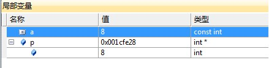
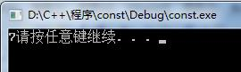

const es la abreviatura de constant, cuyo significado original es inmutable, no fácil de cambiar. En C++, se usa para modificar variables de tipos incorporados, objetos personalizados, funciones miembro, valores de retorno y parámetros de funciones.
C++ const permite especificar una restricción semántica que el compilador aplica forzosamente, permitiendo al programador indicar al compilador que un valor permanece sin cambios. Si en la programación realmente hay un valor que se mantiene constante, se debe usar const explícitamente, para obtener la ayuda del compilador.
1. const modifica variables de tipo normal
const int a = 7; int b = a; // 正确 a = 8; // 错误，不能改变
a se define como una constante, y se puede asignar a a a b, pero no se puede volver a asignar a a. Asignar un valor a una constante es ilegal, porque el compilador considera a a como una constante y no se permite modificar su valor.
A continuación, veamos la siguiente operación:
Ejemplo
Para la variable const a, tomamos la dirección de la variable y la convertimos y asignamos a un puntero a int, luego usamos *p = 8; para reasignar el valor en la dirección de la variable a, y luego imprimimos para ver el valor de a.
En la ventana de depuración a continuación se ve que el valor de a se cambió a 8, pero el resultado impreso sigue siendo 7.


Del resultado podemos ver que el compilador considera que el valor de a es el 7 definido inicialmente, por lo que la operación sobre const a produce la situación anterior. Por lo tanto, nunca intente asignar un valor a una variable const a la ligera, ya que esto puede producir comportamientos inesperados.
Si no desea que el compilador detecte la operación anterior sobre const, podemos añadir la palabra clave volatile delante de const.
La palabra clave Volatile es lo opuesto a const, significa variable, fácil de cambiar. Por lo tanto, no será optimizada por el compilador, y el compilador no cambiará la operación sobre la variable a.
Ejemplo
El resultado de salida es 8, como esperábamos.

2. const modifica variables de puntero.
const modifica variables de puntero en las siguientes tres situaciones.
- A: const modifica el contenido al que apunta el puntero, entonces el contenido no se puede cambiar.
- B: const modifica el puntero, entonces el puntero no se puede cambiar.
- C: const modifica el puntero y el contenido al que apunta, entonces tanto el puntero como el contenido al que apunta no se pueden cambiar.
Para A:
const int *p = 8;
Entonces el contenido 8 al que apunta el puntero no se puede cambiar. Se abrevia como 'valor fijo a la izquierda', porque const está a la izquierda del símbolo *.
Para B:
int a = 8; int* const p = &a; *p = 9; // 正确 int b = 7; p = &b; // 错误
Para el puntero const p, la dirección de memoria a la que apunta no se puede cambiar, pero su contenido sí puede cambiar. Se abrevia como 'dirección fija a la derecha', porque const está a la derecha del símbolo *.
Para C:Es la combinación de A y B.
int a = 8; const int * const p = &a;
En este caso, tanto el contenido apuntado por const p como la dirección de memoria apuntada están fijos y no se pueden cambiar.
Para las tres situaciones A, B y C, según la posición de const con respecto al símbolo *, resumo tres frases para recordarlas fácilmente:"Valor fijo a la izquierda, dirección fija a la derecha, const modifica lo inmutable"。
3. Paso de parámetros const y valor de retorno de funciones.
La modificación de parámetros de función con const se puede dividir en tres situaciones.
A: Transmisión por valor con modificación const. Generalmente en este caso no se necesita const, porque la función automáticamente crea una variable temporal para copiar el valor del argumento real.
Ejemplo
B: Cuando el parámetro const es un puntero, se puede evitar que el puntero sea alterado accidentalmente.
Ejemplo
C: Para el paso de parámetros de tipos personalizados, se necesita un objeto temporal para copiar el parámetro. La construcción del objeto temporal requiere llamar al constructor, lo que pierde tiempo, por lo que adoptamos el método de pasar por referencia además de const.
Además, para tipos incorporados como int, double, etc., no usamos el paso por referencia.
Ejemplo
Salida de resultados8。
Con respecto al valor de retorno de una función modificado con const.
La modificación del valor de retorno con const se divide en tres situaciones.
A: const modifica el valor de retorno de tipos incorporados; el efecto es el mismo con o sin const.
Ejemplo
B: const modifica un tipo personalizado como valor de retorno; en este caso, el valor retornado no se puede usar como lvalue, no se le puede asignar ni modificar.
C: const modifica el puntero o referencia retornados; si se devuelve un puntero a const, depende de lo que queramos que haga el usuario.
4. const modifica funciones miembro de clase
const modifica funciones miembro de clase, con el propósito de evitar que la función miembro modifique el valor del objeto llamado. Si no queremos modificar el valor de un objeto llamado, todas las funciones miembro deben declararse como funciones miembro const.
Nota:La palabra clave const no se puede usar junto con la palabra clave static, porque static modifica funciones miembro estáticas, las cuales no contienen el puntero this, es decir, no pueden ser instanciadas; las funciones miembro const deben corresponder a una instancia específica.
La siguiente función get_cm()const; usa una función miembro const:
Ejemplo
Si se elimina la modificación const de get_cm(), entonces el const _tt pasado por Cmf, incluso si no cambia el valor del objeto, el compilador considerará que la función cambia el valor del objeto. Por eso, en la medida de lo posible, debemos declarar como funciones miembro const todas aquellas funciones que no necesiten cambiar el contenido del objeto.
¿Qué pasa si una función miembro quiere modificar algún miembro del objeto? En ese caso, podemos usar la palabra clave mutable para modificar ese miembro. mutable también significa variable, fácil de cambiar; los miembros modificados con mutable pueden estar en constante cambio, como en el siguiente ejemplo.
Ejemplo
Aquí, en Kf()const, modificamos el valor de _ct mediante ++_ct;, pero modificar _cm mediante ++_cm dará un error, porque ++_cm no está modificado con mutable.
Dirección del artículo original: https://www.cnblogs.com/Forever-Kenlen-Ja/p/3776991.html